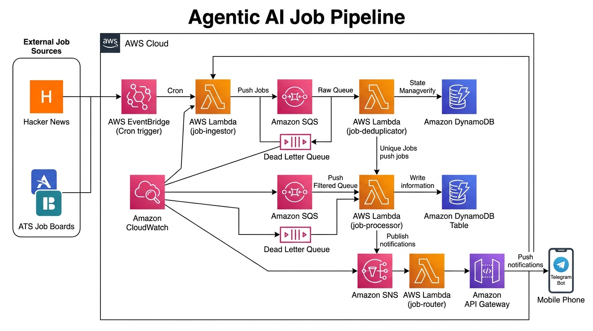

Visual map of all AWS services, triggers, queues, and message flow

rate(3 hours). Fires automated event payload to start job discovery.title+company+url). Checks DynamoDB. Drops duplicates to save 100% of LLM costs.attribute_not_exists to prevent duplicate entries.